|
Table of Contents < - - - return Chapter 2 < - - - next
World War II Story by Robert F. Gallagher Chapter 1 - Chicago Before the War and Pearl Harbor Whatever enables us to go to war secures our peace. - Thomas Jefferson ___________________________ Enjoying Civilian Life If there was a time in my life I would have liked to go on forever, it was the fall of 1941. Everything seemed to be going right for me, and I was enjoying every moment of it. The hard financial times of the Great Depression were over. School was about to end. I had discretionary money to spend for the first time in my life. Between enjoying the camaraderie of my buddies and dating the local girls, my social life was a blast. I was seventeen years old and I didn't have a care in the world. What could possibly go wrong to change all that? 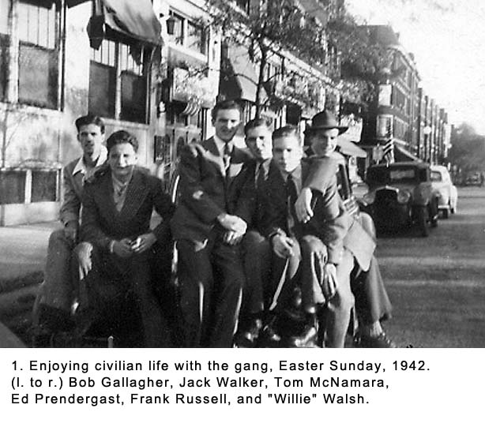 As a senior in high school, it was a matter of months before I would graduate. I looked forward with great anticipation to getting out. I had no plans to attend college. I would not miss school but I would miss the beautiful girls who adorned my classes. In a few months, we would write wonderful things about each other in our yearbooks with pledges to stay in touch, knowing that the friendships of the past four years were coming to an abrupt end. My future plans were uncertain, but at this point in my life I didn't really give it a lot of thought. The new and better life style I had been enjoyed lately as the result of money earned from an after school job blotted out much more serious considerations. The future was just that-something to think about later. The lean years of the 1930s that had dampened my hopes of finding employment after graduation were now only bad memories as jobs were becoming easier to get. I was sure something good would work out for me in the country's growing economy without having the faintest idea of what it would be. Even the great political turmoil caused by the despots of the world that had our country's leaders and many adults gravely concerned did not offer me a clue to what was in my immediate future. Names like Hitler, Mussolini, and Tojo were little more to me than cartoon-character depictions in the Chicago newspapers. I spent most of my spare time hanging out with my buddies on the south side of Chicago (See Fig. 1). We tried everything we could to have fun and create excitement in our lives. We gave up some but not all of the really bad habits we had practiced during our early teen years. As we matured and took on new interests, some of the things that had thrilled us earlier now seemed to be quite juvenile, if not downright stupid. Gone were the days of hitching rides on the back of trucks, sneaking into movie theaters without paying, exploring empty warehouses along the railroad tracks, and other stunts better left untold. Those activities all had one thing in common: they could be done without spending money, a rare commodity in those days. The Chicago policemen who patrolled our neighborhood in squad car number 147 knew us by our first names, and all made trips to our homes to meet our parents, and not for social purposes. They chased us from some activities, suspected us of other deviltry, caught us at still others, and taken us down to the police station when they really wanted to give us a good scare. Scare us it did, but it did not down our mischievous pursuits. The father of one of our gang, named John "Zeke" Byrnes, was a lawyer, and he pulled us through several more serious scrapes that could have resulted in some permanent legal damage being done. It would take a comprehensive explanation of how the City of Chicago's Police Department and the court system worked in those days to explain. Suffice to say that neither agency was known for their high ethical standards and money-the kind paid under the table-and clout often substituted for justice. Despite the lectures, threats, house confinements, and other punishments we received, mainly from our parents, it was just plain growing up that changed our ways more than anything else. Also, the improvement in our financial status-we were all enjoying the fruits of our part time jobs-gave us a better perspective on things. It meant that we could afford things we had wanted for many years. Like all young men, we were crazy about cars and motorcycles, so a good portion of our money went toward the pursuit of transportation. This was where we found much of our new stimulation. My buddy, Frank Papie, bought a used 1937
Harley-Davidson motorcycle and raced up and down 79th Street, the main
commercial street in our neighborhood. He was showing us what great
acceleration it had while Zeke was hanging on to him from behind on the
buddy seat (See Fig. 2). "Hey Frank, what did you do with the Henderson?" I asked as he pulled up to the curb where the rest of us were hanging out in front of Miner - Dunn's Hamburger Shop. "Still have it. Why? Do you want to drive it?" "Do I want to drive it? Of course. Where is it?" "It's parked over on Cregier, next to Prendergast's Drug Store. Come on, jump on and I'll run you over there." Zeke got off the Harley and I got on. The Henderson was the mother of all motorcycles (See Fig.3), and it was a monster by any comparison. Frank had bought it second hand about four years earlier. With its four-cylinder engine, it was bigger than most bikes and had only slightly less horsepower than some cars of the time. This one was twelve years old and had been driven hard and often over the years. It was sitting there propped up on its kickstand next to the curb, and its well-worn look told you that maintenance had not been a high priority for the many years it served its owners. Looping out from each side was a steel bar intended to absorb the shock if you tipped it over. They were called "sissy bars." The pavement under it had the usual pool of oil from the leaking transmission. The leather seat was peeling, there were several dents in the fenders and the tires were as bald as a billiard ball. But to me, a young man in his teens, it represented speed, power and the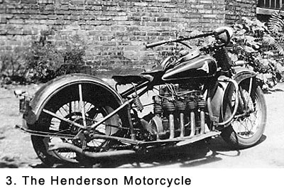 opportunity for adventure. Appearances were not even a consideration. I straddled the seat and pulled it upright from its tilted position-no easy maneuver because of its weight. Many times in the past, I had helped Frank, straining to bring it upright after it had fallen over on its side. It was a two-man job and, even then, it took great effort to stand it upright. "Keep your legs spread out or you'll get a shock that you won't forget from the spark plugs on those cylinders. You could lose control," he reminded me. "Are you worried about me or the bike?" I asked. "You didn't cost me fifty bucks." After five or six kicks of the starter peddle, the machine roared to life. I felt the surge of energy throughout my body. It wasn't as noisy as the Harley, but it made enough racket to let you know there were plenty of horses inside. As I worked the throttle back and forth, everyone within hearing range turned to see what was going on. Many times, previously, I had ridden on the back of the double seat with Frank and watched how to clutch, shift gears, and use the brakes, but I had never driven it by myself before that day. Frank began listing the bike's other deficiencies. "Don't rely on those hand brakes. They're not worth a damn. Use the foot brake mainly. Also, the spring on the clutch is too tight, so ease it back slowly or it can get away from you." I thought, Let's see now; all I have to worry about is tipping over, getting a shock, the hand brakes, and the clutch. It would have taken more than these problems to scare me off. I remembered the thrill of riding as a passenger on this baby many times before, and I wasn't about to pass up the opportunity to make my solo run. I pushed in the clutch, noting the effort it took, shifted into first gear, and labored to let the clutch out slowly as I gently twisted the handle for more power. "Come on, follow me, " Frank yelled as he took off, made a turn at the corner, and headed east down 79th Street with an ear-shattering roar. He then slowed and tried to hold back to let me catch up. I rode in first gear up to the corner where I had to slow almost to a stop to let traffic pass. Finally it cleared and I took off after him, shifting into second gear. When I let out the clutch and gave the gas handle a good twist, I felt like I was being shot out of a cannon. What a thrill! The noise from the two bikes reverberated off the store windows on both sides of the street. It was loud enough to raise the dead. Then the Henderson backfired; it sounded like an explosion going off. It startled an elderly lady who was walking along on the sidewalk. She gave me a dirty look; mouthing something I couldn't hear. She was probably saying, "You hoodlum!" or maybe something worse. As we continued on down the street, I concentrated on watching out for cars, pedestrians, and the big red electric streetcars that rumbled down the main street of our neighborhood (See Fig. 4a). The streetcars were the primary mode of transportation in Chicago and they could take you anywhere in the city, with a transfer or two. Officially they were named the Chicago Surface Lines. 79th Street was made out of paving blocks that had been polished smooth by decades of heavy traffic. I rode between the tracks to avoid the rail slots, but I knew that any sharp turn on the bricks would send me into a spin. Despite all of the warnings Frank had given me, it was the bald tires on a slick surface that worried me most. We stopped behind a streetcar to allow passengers off. My feet immediately went down to the pavement to assure the bike did not tip, even a little bit. I glanced over to see several young boys on the sidewalk watching the two of us with what I interpreted as looks of envy. 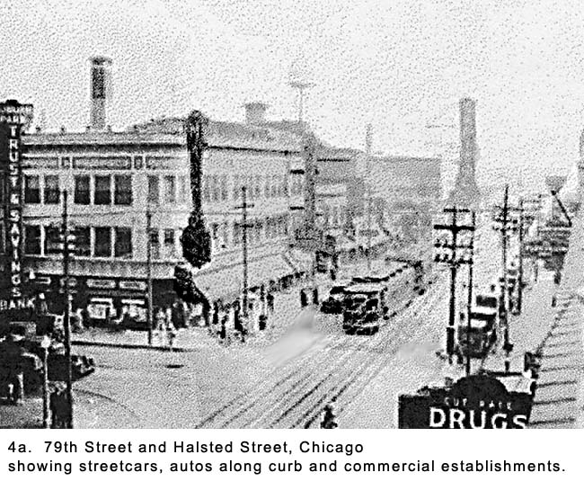 That's right, fellows, now you know how I felt all of those times, I thought. Give the throttle a little punch so they can feel the power. Now, just don't grind the gears taking off and everything will be just fine. "That damn clutch is going to drive me nuts." As the streetcar started up, Frank moved toward the curb as he glanced back at me and shouted, "Let's go around!" Passing a moving fifty-foot-long streetcar on the right side had all the excitement and danger of playing Russian roulette. If a car was parked up ahead in the right lane, you might misjudge the distance it took to pass before you could pull back ahead of the accelerating streetcar. Despite their enormous size, they had a deceiving rate of pickup. Also, if a car pulled out too far from a side street while you were passing, you were dead meat. I'd had too many close calls along those lines as passenger to know I was not ready for that adventure on my own, so I yelled back, "No!" and just to make sure he heard me, I repeated it as we took off again with a roar. With no helmet or goggles, I was getting the full brunt of the elements as we picked up speed. In addition to the things you have to watch out for while riding a bike, I was trying to remember all of the unique characteristic of the Henderson I had been warned about. Oh, no, Frank's turning down Jeffrey Boulevard, I thought. It wasn't named a boulevard for nothing; traffic would be heavy and moving fast. While I was catching on to the art of shifting gears, I was still tentative about the idea of going too fast on a busy street when my steering control left a lot to be desired. There, I made the turn all right. Now just keep up with the traffic and everything will be just fine. Frank passed a couple of cars, and I followed him. We turned again at 77th Street at a speed faster than I would have liked. I felt the tires slip slightly as I dropped my left foot off the bike and held it just inches off the pavement in anticipation of tipping over. I was sure that I was going down, but somehow I recovered. To steady the bike, I had overcorrected the steering and I came within inches of hitting a parked car. I could feel my heart pounding in my chest. While returning my foot to the bike, my leg came too close to the sparkplugs atop the cylinders and I got a good shock to my right leg, just as I had been warned. The pain ran up my leg as I jerked it away from the cylinders. But, there was no time to dwell on my distress because too much was going on that needed my undivided attention. We raced across side streets without slowing down, with the confidence that any traffic would stop, not us. At the speed we were going, with cars parked on both sides of the street restricting our lateral sight, and the bad brakes on my bike, anything that got in our way would have meant a disastrous accident. But we made it back to where we had started. I sat on the bike for a few minutes with my feet on the ground, savoring the experience. Future rides became easier, as I mastered the art of driving faster than necessary so adrenaline would keep pumping at all times. Riding a bike was no fun unless you were pushing the limits to where it was more than a matter of getting from one place to another. There had to be thrills involved. "It's the next best thing to sex, right?" Frank asked as we were setting the bikes up on their kickstands, following that first ride. "Right." I responded with the same bravado. Because neither of us had any first-hand experience with sex, we both knew the other was lying through his teeth. Both of us had attended the same Catholic grammar school and were well aware of the mortal sins resulting from such activities. At least, that's what we told ourselves to justify why we were inexperienced in that field of action. The real reason we had both kept chaste was the only girls we knew had also been well indoctrinated with the fear of losing their immortal souls and kept us at arm's length. We immediately dropped the subject because it was something that neither of us wanted to pursue. "I'm selling the Henderson," Frank announced as we headed into Prendergast's for a draft root beer, "but you can drive it until then. You'll have to put gas in it, though. I put in a nickel's worth a couple of days ago and then drained a couple of the hoses, so it probably amounted to half a gallon. There probably isn't that much left." Later, I drove the bike over to the discount gas station on South Chicago Avenue and put in one gallon. It cost me twelve cents and I knew that at forty miles per gallon, it would last me for about a week of neighborhood driving. It was now necessary that I adjust to the bike's many quirks that Frank had stipulated and to some he had forgotten to mention. Driving home on the evening of that solo run and finding that none of the lights worked was an important new deficiency to add to the growing list. In the next several months, I became quite proficient at driving a motorcycle and I had the time of my life doing it. I could even keep up with the Harley most of the time, but I still stayed away from passing a streetcar on 79th Street. Up to that point in my life, it was the most fun I had ever had. Fall came and the weather turned cold and rainy. Frank sold the Henderson and my biking days were limited to riding as a passenger on the Harley War Comes to the United States The weather on December 7th, 1941, was a pleasant change. The sun was out and it was quite warm for that time of the year. It started out like most other Sundays with a trip to twelve o'clock mass at Our Lady of Peace Church (See Fig. 4b). 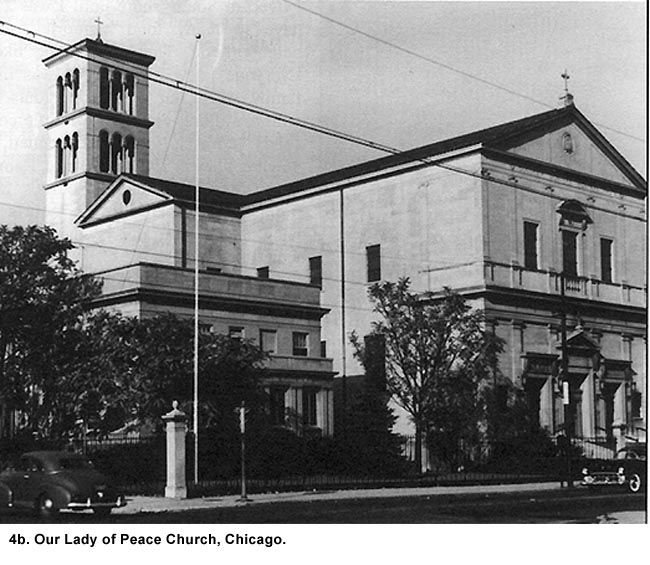 After mass we walked across the street to Shapiro's Drug Store for a hand-mixed coke with a dash of cherry juice. When I walked through the door, there was a man standing by the cigar counter, and he was talking loudly. "Those damn Japs, those damn Japs." I moved over to take a seat at the soda fountain, not getting the significance of the man's ranting when I finally observed the obvious tension and serious demeanor of everyone in the place. Noticing my puzzled look, someone finally said, "Japanese planes have bombed our Navy at Pearl Harbor." While I had no idea where Pearl Harbor was located, I pretended that I did. "I'll have a cherry coke," I told the soda jerk. Nobody at the counter knew what to say at first as we sat there mulling over what we had just heard. Finally, anger began to replace shock when the first mention of hundreds of casualties was announced. As I left the drugstore, I met the parents of one of my friends and we exchanged greetings by shaking our heads with an indication of disgust and saying, "Isn't it terrible." Walking home, I thought about what I had heard earlier. Well, the Army and Navy are going to have to do something about that situation. It never even occurred to me that I was going to be involved. While I had just heard news of what was to be one of the most significant stories of the century, by the time I was halfway home my mind was on something else. I was trying to remember what time the gang was going to meet later that afternoon to go to 75th Street for the triple feature at the Ray Movie Theater. That's what was important to me at the moment. Later that evening at home, the inevitable consequences of the Japanese attack began to register for the first time. Our family turned on the radio and heard news commentator H. V. Kaltenborn give statistics on the loss of ships in our Pacific Fleet and the many thousands of casualties resulting from the sneak assault (See Figs. 5 & 6). The next day President Franklin D. Roosevelt made his famous speech to a joint session of Congress in which he declared the "day which will live in infamy."
Soon after the speech, Congress declared war on the Empire of Japan. Nazi Germany, also known as the Third Reich, and Italy declared war on the United States on December 11th because of treaties these countries had with Japan. Everyone knew our country was now in for a long and bitter battle. Even then, it took several weeks before I fully realized how the events taking place would drastically change my life and the lives of everyone I knew.
In a very short period of time, we learned the total horrors of Pearl Harbor including the deaths of 2,323 American servicemen.1 A sizeable number of battleships, cruisers and destroyers were sunk or badly damaged; hundreds of our aircraft were destroyed. It became abundantly clear to all Americans there was now a great justification for our entry into this war. Gone were the doubts. The isolationists could not defend their views when there was the possibility we were now defending our own shores. Families began to brace for the hardships war brings even to civilians outside the war zone. Tough sacrifices would soon be made as they committed the lives of their sons and daughters to military service in what the politicians liked to call the fight for righteousness over tyranny. Many factors led up to our country's entry into the war, and although a single act caused the declaration of war, the decision had been inevitable. The Germans and, to a lesser degree the Italians, had been pursuing policies of aggressively conquering neutral countries in Europe and Africa while Japan was doing the same in the Far East for a number of years prior to the Pearl Harbor attack. England and France had been at war with Germany since September 1, 1939, when the German army invaded Poland.2 Earlier, Germany had annexed Austria and taken over the Sudetenland of Czechoslovakia. Two weeks after the German invasion of Poland, Russia invaded that country from the east after signing a non-aggression pact with Germany.3 At that time, many Americans looked upon Russia as a greater menace to peace than Germany and the term "communist threat" was widely used in this country. Germany went on to conquer Denmark, Norway, Luxembourg, the lowlands of Holland and Belgium, and the north of France. They drove the British Expeditionary force out of continental Europe; they then occupied the greater part of Western Europe. During most of 1940 and continuing into 1941, Germany attempted to bomb Great Britain into submission with constant air raids on London and other parts of that country. At the same time, Germany and Italy invaded the Baltic countries and areas of North Africa. Despite these major incursions, many Americans still felt this was a European war, and they were comfortable with the ocean between what was happening over there and our country. They were convinced somehow the distance between would insulate America. Organized groups like America First openly and vocally preached a policy of isolationism. While this was going on in Europe and North Africa, Imperial Japan was invading and occupying with brutish behavior neutral countries in the Far East. Warlords who believed in taking over countries by force were dictating their country's policy. In July of 1941, the American government froze all Japanese assets in the United States in response to Japan's occupation of foreign territories. This cut off all trade between the two countries.4 Despite our country's rhetoric of being neutral during those years of political turmoil and open conflicts on several continents before Pearl Harbor, America was not following a policy of completely isolation. We sent England military supplies, and our naval forces convoyed both British and American ships across the Atlantic sea-lanes. Congress had passed a bill called Lend-Lease in March of 1941 that further allowed war materials to be shipped across the Atlantic. The world was moving from one crisis to the next. Still, the American people were heavily divided on what we should do about it. The prevailing feeling was that we should stay out of war. The bombing of Pearl Harbor on December 7th finally awakened the American people to what was happening throughout the world. That single act on one day did more to unite the country than all the rhetoric or propaganda could ever have done. We knew then that we could not be neutral any longer. After December 7th, the major countries of the world split into opposing camps to fight a truly world wide war. Germany, Italy, and Japan were known as the Axis Powers. Despite the earlier pact between the two countries, Germany attacked Russia in June, 1941. As a result, Russia became our ally. Of the many countries opposing the Axis Powers, the United States, Russia and Britain were the major players and became known as the Allied Powers. Even though there was great emphasis put on the war, my friends and I continued to lead our lives as though nothing had changed. Most of our time was spent going to the movies and enjoying ourselves while hanging out at Miner-Dunn's hamburger shop at the corner of 79th Street and Ridgeland Avenue (See Fig.7). 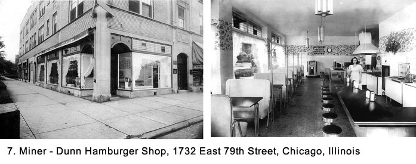 We had progressed from the days when six of us would crowd into a booth and share a nickel order of French-fries to where we each had a hamburger, an order of fries and a Double Cola-total cost twenty cents. It seemed strange to be paying our way into the theaters because we had been sneaking in without paying for most of the years of the Great Depression. It was a hard habit to break. On weekends we always made a trip to Cooney's, a cheap saloon where they did not look too closely at our fake ID cards. Some of us were dating girls from the neighborhood. Because gas rationing limited the use of the family car, dates usually consisted of doing the same things we did during the week: movies at the local Avalon Theater (See Fig. 8), a stop at Miner-Dunn afterwards, and walking the girl home. We played sixteen-inch slow-pitch softball, handball, or touch football over at the Horace Mann-pronounced "horse man" by the locals-school playground when the weather allowed. We played a lot of pocket billiards and bowled at Turner's Bowling Alleys on South Chicago Avenue. But, most of the time, when we were not in school or working, we just hung around street corners lagging pennies or sat in Miner-Dunn's talking. 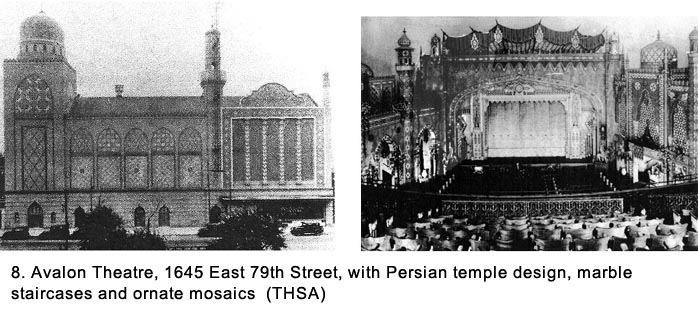 Now that we had discretionary funds, I was designated by my gang as the "bag man" to place bets with the bookie located in a cigar store directly across 79th Street from Miner-Dunn. While the term "bag man" really indicted the middleman who takes bets for a crooked official, in my case it had a different meaning. It meant I was the one who collected nickels and dimes from my friends and went across the street to bet fifty cents on some nag to place after we diligently studied the racetrack lineup in the morning paper we borrowed, used, and then returned from the local newsstand. Because I was the tallest of our group, we felt the bookie would believe I was old enough to make a bet. In reality, there was no minimum age. The whole operation was illegal and the bookie did not care how old you were as long as you had the cash. We seldom won, but it did not deter us. It was the challenge that counted. We considered ourselves as near racetrack handicappers while in fact, we knew nothing about picking horses. Earlier in my senior year, I had a part time job at the Federal Reserve Bank in downtown Chicago, where my friends and I sorted checks for forty cents an hour pay. Here, too, we found a way to ride the edge of propriety when we used the men's washroom to gamble and run a sting, although a minor one. In this bastion of financial domination we would match pennies during our ten-minute breaks every hour. The sting came in when we rigged the outcome to win every time. Later in my senior year, that same bunch of friends and I switched over to work at the Montgomery Ward warehouse located on Chicago Avenue, just west of downtown Chicago. We filled orders for their mail order business. Frank had sold the Harley, so the only transportation we had, other than the big red streetcars that crisscrossed the city, was an eleven-year-old Model A Ford coupe (See Fig. 9). My friend Zeke had paid fifteen dollars for it at a junkyard. The car had no title, no front bumper, only one headlight, no taillights, no floor mats, no speedometer, and many other shortcomings.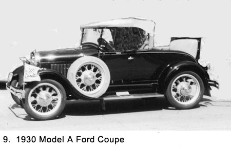 We chipped in for gas we bought for ten or twelve cents per gallon. It burned a lot of oil, so we used drain oil we got free from the waste drums behind gas stations. We carried a crank to get it started because the battery was usually not strong enough to turn the engine over. Many hours were spent resetting the timing, cleaning the spark plugs (the waste oil we used did not help here), adding air to leaking tires with a hand pump, and measuring the gas with a stick because the gas-gauge did not work. The brakes were so bad the pedal would bang against the metal floor of the cab when it was slammed down in a desperate effort to bring the car to an emergency stop. Many stops were emergencies because of Zeke's reckless driving. To aid in stopping, he would shift down to a lower gear and finally into reverse, when needed, in a final desperate move. Often, eight of us would pile into this car that was meant to hold four people-two in the cab and two in the rumble seat-for the trip down the Outer Drive, along Michigan Avenue and then through the Loop to Montgomery Ward. Two of the eight people would be standing on the rear bumper and leaning into the rumble seat during the trip. People in other cars, mainly women, would gasp as we passed them on the road. The best description of that car came from a truck driver who leaned out of his cab while we were stopped next to him at a stoplight and yelled over to us, "Was anyone killed in the wreck?" Zeke, who was touchy about his car, responded with, "Jerk!" Despite its dilapidated condition, we had a lot of fun with that car, and for several years, it served us well as a means of getting around the city. In addition, it was the center of our social life and gave us great mobility. The police gave Zeke numerous tickets for speeding, erratic driving, four people in the front seat, missing headlight and the other deficiencies. One evening we were stopped for making an illegal left hand turn at the corner of Randolph and Michigan Avenue in downtown Chicago. Zeke was issued six citations. He tore up the tickets before the police were out of sight. Because the car had no title and the lone license plate had been picked up out of a gutter, tracing the owner would be impossible. Starting in the Spring of 1942, my friends and I started to pay more attention to the war when many of the young men in our neighborhood just a few years older than we entered into military service in large numbers. By that time, the newspapers, radio, movies, and conversations in general were full of things related to the war. It was common to see men in uniform everywhere we went. One of my friend's brother, Bob Walker, was accepted in the Navy's pilot program. He was commissioned a lieutenant in the Marines and came home on leave to describe how he was landing planes on aircraft carriers. He had been selected to fly one of the torpedo-carrying planes called the "Avenger." (See Fig. 10) We thought, what could be more exciting! Then he got his gold wings, and one day we saw him in his dress whites uniform. We would have given anything to trade places with him; first for the thrill of being a Marine pilot, and second for the way that uniform would change our social lives. Ed Prendergast commented, "If I had that outfit, I would have to carry a baseball bat with me at all times to fend off the babes." 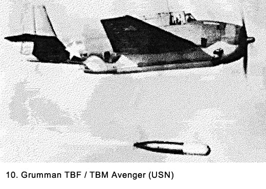 While we knew there was some danger to flying a plane in combat, somehow we felt that the Marine pilot would be above it all. How wrong we were. Bob Walker was killed in action before I went into service. They never found his body because he crashed into the sea. That made the grieve process even worse for the family. He would be one of the first, but definitely not the last, of the many war casualties from the neighborhood. We heard words at his memorial service like "patriot" and "hero's death" for the first time. Until then, a hero had been some abstract person in a history book or possibly in the media. Heroes were now from closer to home and definitely becoming more personal. Once we realized we were not going to be just casual observers of the war, my friends and I began to talk a lot about what branch of the service we wanted to be in. In my case, there was no question about it. From the time I was a very young boy, there was only one thing in the world I wanted to do. I wanted to be a pilot. Since my early teens, I had been trying to learn everything I could about airplanes. I had large scrapbooks full of pictures of them that I had cut out of periodicals. On my birthdays, I would get a new subscription to Flying Magazine, and I would read each edition from cover to cover. I would also build model airplanes. When I was old enough, I would take the streetcar over to Municipal Airport (later named Midway Airport after a decisive naval victory in World War II) at 63rd Street and Cicero Avenue. I would stand at the fence and watch the planes land and take off for hours. From studying the periodicals, I could identify by sight any plane there was, including foreign ones. I looked on the war not as a terrible time when I would have to go into service and fight for my country with the chance of being killed or wounded, but as an opportunity to learn how to fly. In my mind, I had my role all planned out. I was one of the few people in the country who felt some good could come out of the war. It would be my opportunity to fulfill my dream, a dream that would eventually become an obsession. I thought only of myself and had no understanding of what war was really like. I still thought of it as an adventure that would make a hero out of me by quick and easy action. My friend Zeke wanted to be a Marine, and we figured it would be a good match. He was one of those rare individuals who was absolutely fearless and he loved adventure: The more challenging the better. But, just two weeks before we all were to graduate from high school, something happened that destroyed Zeke's dream. In the late spring of 1942, Zeke had traded in the Model A Ford for a four-year-old car called a Hudson-Terraplane. This car was a big improvement over the Model A but it did have two major deficiencies: it was top heavy and there was play in the steering wheel. The play was one of the things Zeke had on his list to get fixed as soon as he had enough money saved. While five of us were out driving about, or "bombing about" as we called it, we had an accident and Zeke was killed. He had let someone drive who was unfamiliar with the play in the steering and despite his coaching as to how to handle it, she-a girlfriend of one of our gang-rolled the car over on Zeke who had been standing out on the running board. Several of the others in the car, including myself, were banged up but we recovered without any permanent damage. The shock of the accident, especially watching one of our best friends die a horrible death, was something that dispirited the rest of us for many months. Instead of high school graduation being one of the happiest times of our lives, it was one of the saddest. At Zeke's wake, one of his uncles, who was a Chicago cop, strong-armed two of my friends. "What really happened that night?" he demanded. He was sure that there was more to the story than just a plain accident, but there wasn't. Our reputation was such that we were being accused of roguery even when none existed. At the time of my graduation in June 1942, I was still only seventeen years old and not eligible for the draft until my birthday in late August. I could not take the tests to be an Air Cadet, which was what the Army Air Force called its pilot trainees, until that time. Because I had never considered going to college, I decided to go to work as soon as I was old enough to apply for a full-time job. Our family's extremely difficult financial condition during the Great Depression helped solidify my parents' feelings higher education was not economically feasible, and we children had no alternative but to accept that philosophy. Their financial picture was improving in the early 1940s, but the decade-long period when they needed every last penny to pay for the necessities of life was still vivid in their minds, and it would remain there for the rest of their lives. In brief, this "Depression Mentality," as some people call it, meant that our economic, educational and resulting social prospects were limited. The only possibility of college ever discussed in our home was my older brother Jim and I could go to Chicago Teachers College, live at home and work part time to pay the tuition. In 1942, my mother, and to some degree my father, felt being a school teacher in Chicago's public school system was one of the best jobs there was, and maybe it was the only option available to us. After all, weren't the teachers paid during the worst days of the depression? My aunt, already a schoolteacher, probably knew someone who could pull some strings-a prerequisite for getting any job with the City of Chicago-to get us into the college. It was an option that had no appeal to my brother or me. With college ruled out, the alternative was to go out and find a job. The country roared into the mass production of material to fight the war. Existing industrial businesses were converted from producing civilian equipment to war supplies. No new cars were being produced. All the automobiles manufacturing plants were converted into assembly plants for military airplanes, tanks, Jeeps, trucks, and other wartime vehicles. Companies that had produced refrigerators, washing machines, furniture, clothing, and almost any other product that was part of civilian life before the war were retooled to make products for the war effort. People were working overtime, and there were three shifts, around the clock, seven days a week, at companies where not too long before work was unavailable. Women were moving into jobs in manufacturing and construction that had previously been occupied only by men. Many employment opportunities that ordinarily would not have been available to them were opened because men were leaving for the armed services. The civilian population on the home front did its part for the war effort. They bought war bonds to help finance the armament effort, and there were bond rallies, usually with movie stars or other celebrities giving speeches. People who could not afford to purchase a whole bond were encouraged to buy ten and twenty-five cent stamps to save for a full one. Rubber, scrap metal, and even aluminum foil (called "tin foil" at the time) were saved and then taken to collection sites. Ration stamps were issued to everyone for sugar, meat, coffee, and butter, which were in short supply. Housewives saved cooking grease in coffee cans and turn it in at the butcher shops where it was redeemed for meat ration stamps. Gasoline, too, was rationed, which greatly decreased the amount available for recreational purposes. There were three classes of ration stamps for gasoline, A, B, and C. Every automobile displayed one of the letters on its windshield and drivers used coupon books at the gas station. Most people had an A card that rationed you to three gallons per week. My father worked as a draftsman for a metal fabricating company in Gary, Indiana, that had converted to the manufacture of parts for tanks. Because it was considered a war industry and he had a long commute to get to work, he had a C card. Even though it allowed him more gasoline, my use of the car was usually limited to trips to the store. Many other changes were happening in America because of the war. Air raid captains were designated throughout Chicago, and meetings were held on what to do in case of a raid by enemy planes. Vegetable gardens-known as Victory Gardens-were created on many empty lots in the neighborhood. Flagpoles sprang up around the neighborhood and there was always a patriotic civilian who raised and lowered the American flag every day. Nylon stockings for women went on the market for the first time, and they were a huge success because of their durability compared to the silk ones used up until that time. The new nylons were hard to get and much in demand by women. One unusual thing happened in the early years of the war. A family named Japp was the major producer of potato chips in the Chicagoland area, and the name was prominently displayed on all of their products. It was a promotional nightmare for the company because the term "Jap" was starting to be used as an obscenity. Immediately after the Pearl Harbor attack the brand name was changed to Jay's, as it remains today. The American Red Cross held blood drives, and many civilians willingly volunteered. Later, the Red Cross would organize a program to send aid packages to American prisoners of war (POWs) in addition to their other charitable work. The American government put out a steady and comprehensive stream of information to spur the people on to greater accomplishments in the war effort. Some of it was inspirational and patriotic; some was an effort to paint the people of the Axis countries as savage and ruthless enemies. Special aim was taken at their leaders, Adolph Hitler, Benito Mussolini, and Hideki Tojo. Tojo was the Premier of Japan who installed and oversaw a civilian cabinet comprised of hard-line military men like himself. He was picked as the Japanese leader we should hate other than the Emperor. Tojo looked more sinister, and therefore made a better villain than the Emperor, who was usually pictured riding a white horse. 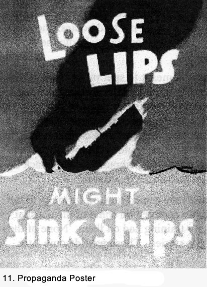Patriotic information was presented in movies, magazines, newspapers, posters, and by radio. It was not described by our country as propaganda. That was what the enemy countries put out. As an example, posters were placed in stores, schools, and public meeting places with headings that read: Remember December 7th; We Can Do It; It's a Woman's War Too; United We Win; Use It Up, Wear it Out; He's Watching You; A Slip of the Lip Could Sink a Ship (See Fig. 11); and Stamp 'em Out. The Hollywood war movies produced always depicted the enemy as sneering and sadistic barbarians. We began to really hate the people of the enemy countries, not just their leaders, because we believed all the bad things we heard about them. I'm sure that this information stimulated many young men to enlist in the military services, but the enthusiasm to get the enemy, as depicted in the movies, was somewhat overblown. Many of the men I knew who enlisted did so just before they were to be drafted in order to have the option of getting into a certain branch of the military. Others waited until they were drafted. The young men of the country seemed to willingly accept their responsibility and duty of service. With a very few exceptions, they did so without complaining or without any promise or expectation of reward. It was just the thing to do. Among my friends and the young men in my neighborhood, there was also a great degree of peer pressure. Nobody would even think of being different by refusing to serve because they knew that their friends and neighbors would ostracize them. Married men and those who were older were not always as eager to serve. Nevertheless, few refused to do so. My brother Jim was drafted and after a short stint at Fort Leonard Wood, Missouri, was sent to Minnesota, where he spent most of the war years with a meteorological outfit. Other friends of mine joined the Marines and the Army Air Force. There was just one conscientious objector in our neighborhood. (That was the official name for draft resisters.) Everyone seemed to know his name but no one knew him personally, or at least they would not admit it. My friends and I referred to him as we would a leper. Patriotic music was played frequently at public events. Movie theaters and radio stations ended their programs every evening with The Star Spangled Banner. We all got goose bumps when Kate Smith sang God Bless America. We knew all the words to the music for each of the military services: the Army's The Caissons Go Rolling Along; the Navy's Anchors Aweigh; the Marines Hymn; and the Song of the Army Air Force because we heard them so frequently, especially in movies and on the radio. Before too long, casualty lists were being published in the newspapers. Everyone checked them diligently to see if there was anyone who they knew. The first American heroes of the war were presented to the people. They were usually pilots like the Marines' Gregory "Pappy" Boyington, who was known for shooting down a large number of Japanese planes in the Pacific Theater of Operations. While the pilot deserved all the acclaim he received, depicting a pilot's heroic deeds was also a sanitary way to portray the war. There was no blood, no cries of pain, no dead bodies, and no horrible pictures of mutilation. Pappy shot down enemy planes, they fell into the ocean, and that was the end of that. The glorification of Boyington's heroic actions was meant to spur on the civilian population to bigger and better goals, and it worked. The newspapers, magazines and newsreels in movie theaters followed a similar pattern by giving us an unrealistic version of what was going on in the war. They did not show the darker side of what was happening. No pictures were ever shown of a dead American serviceman. Like most of the others who were about to go into service, I still had some kind of a romantic notion about what the army and other branches of the service were all about. Looking back on it, nothing could have really prepared me for what I was about to witness. A couple of my friends enlisted in late 1942, and they came home on furlough to tell us what it was like in the service. The stories usually centered on some of the unusual people they had met and the effect stringent military training had on them. None of them had been overseas yet, so we did not get any combat stories. Those would come later. The first one of our gang to get into a combat situation was Tom Broderick. He enlisted in the U. S. Merchant Marine Cadet Midshipmen program in early 1943 (See Fig. 12). After a ten week training program at their academy in Kings Point, New York, he boarded a freighter and joined a 280-ship convoy to North Africa. 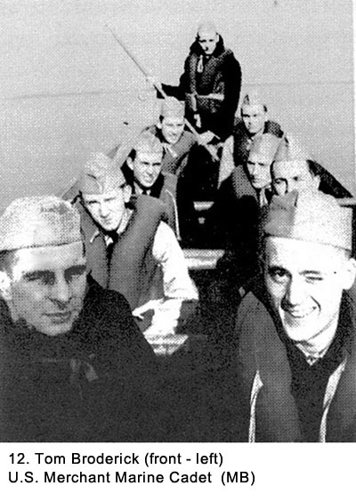 They sailed across the perilous Atlantic Ocean and through the Mediterranean Sea, where the fear of German U-boat attack was at an all time high. We did not get his stories about this adventure until after the war because most of us were in the service by the time he came home on leave. Tom's adventures would not end there. After another trip across the sea as a midshipman, he decided that he wanted to become more directly active in the war effort. He resigned his Navy Reserve Commission after seven months and joined the Army's Infantry to become a paratrooper. He was assigned to the 82nt Airborne Division. He would be involved in one of the major operation of the war in Europe and he would receive a debilitating wound that would greatly affect the rest of his life. Waiting To Go Into Service When I reached my eighteenth birthday in August, I registered for military service with the local draft board as required by law. I took a cursory physical exam, and was given a registration card stating I was classified as 1-A. This meant I was subject to be called up for service whenever I was needed or when they had room for me. I knew they were taking the older men first, and it would be some months before I would be called up for service. Because I was having such a good time with my friends, many of whom were still civilians, I decided to bide my time until I was ready to take the Air Cadet tests for pilot training while keeping a careful eye out to make sure I beat the call-up from the draft board. Meanwhile, I decided to take a full-time job. By this time, Chicago had a great reservoir of jobs available because of the war effort, and there were many booming industries from which to select. Three of the leading ones in my neighborhood were the stockyards, railroads, and steel mills. I got a job with Carnegie Illinois Steel Company's South Works (later U.S. Steel Corporation). Their mill was located on the shore of Lake Michigan, about three miles east of the apartment building where our family lived. It offered a great source of employment to the area. The drawback was the heavy dose of airborne soot discharged on a daily basis. Extreme measures had to be taken in order to maintain a clean house. In our home, we washed down the painted walls at least twice a year, and curtains were washed every month. We thought everyone lived in an atmosphere like that. Because everyone has to have someone to look down on, we laughed at and to some degree pitied, those South Siders who lived about ten miles northwest of us near the Union Stock Yards where cattle and pigs were slaughtered and processed. The area was known as Back of the Yards. "How can they stand to live with that overpowering smell?" we said. It never occurred to us that some people were saying, "How can those people live so near the steel mills with all of that dirt in the air?" For my first job at the mill, I worked out of the basement of the Chemical Laboratory Building. Every hour or so, I walked about a mile over to the blast furnaces to pick up samples of iron that had just been made. The first part of the trip took me over a long bridge (See Fig. 13). While I did not consider my job dangerous, at least in comparison to some others in the mill, it was anything but commonplace. At each pick-up point, I had to walk across a three foot wide bridge set about eighteen inches above a stream of molten iron heated to two-thousand degrees. With my well-covered elbows extended out to protect my face from the heat, my thought always was, Walk fast but not so fast that you might stumble. I worked one of three eight-hour shifts in a twenty-four hour day. Sometimes my work hours were from midnight until eight o'clock the next morning. 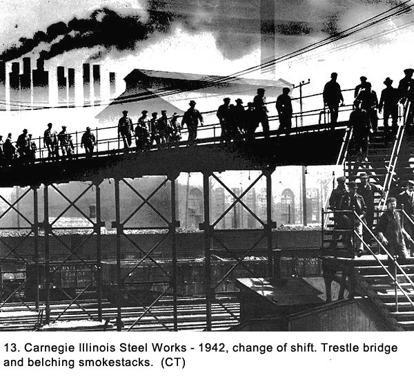 The mill was the biggest, dirtiest, noisiest, gloomiest, hottest, and the most exciting, interesting, dangerous place one would ever see. How could an industry like that exist so near a populated area and so few people knew what went on there? There were multiple tin buildings built on a massive scale. A hundred smoke stacks belched out black smoke or white steam. Coke ovens poured out a product that produced flakes of graphite so thick they polluted the air throughout the mill on a continuous basis. Ten blast furnaces, each the size of a football field and standing eight stories tall, discharged steam as they transformed raw materials into liquid iron that poured down troughs into ladle cars drawn by the mill's own railroad. Bessemer furnaces spouting flames into the sky. Many of the men who worked there wore the same heavy clothing-even in the middle of summer to protect against the greater heat of fresh made iron and steel-without ever laundering it. Everyone carried a lunch pail and wore either a wool cap or a felt fedora. There were tough jobs where men had to shovel tons of raw materials like manganese and nickel into blast furnace doors where steel was produced, then cover their faces with the shovel to keep from being burned. Overhead, five-hundred ton cranes picked up and moved massive ladles of liquid metal as easily as a widow handles her teacup. Teaming mills where the raw steel was poured into ingot molds and the long line of newly stripped ingots still red hot forced the workers to shield their faces as they passed them. Hot rolling mills with stands containing large rollers made to finite tolerances flattened slabs of red-hot steel after many passes, with each movement getting faster. Most of this heavy-gauged metal was going to be forged into weapons of war. There were cold rolling mills where the metal was downsized sometimes to paper-thin thickness under such great pressure it could be done when the metal was cold and pickling vats loaded with acid hundreds of feet long. Tinning mills with a mass of integrated machinery were lined up so far that you could not see from one end to the other. Metal flew through the machinery at lightning speed, becoming steel to be shaped into containers for military ration, Campbell's soup, barrels and hundreds of other products. In the structural mill I-beams and wide-flanged beams were shaped into basic structures for new ships and other wartime uses we knew little about. There were men in lousy positions who worked hard during all weather conditions and often had their lives on the line while doing their jobs. Laborers were paid less than a dollar an hour. Emergencies were a common occurrence. Whistles blew, sirens wailed, men scurried about as near panic set in. Spilled acid, furnaces leaking molten metal, ladles spilling, red-hot sheet metal bunching up on the rollers, tipped ingots, and other calamities were common occurrences. With the everyday carelessness of men doing repetitive jobs, it was a real wonder why there were not more accidents than there were. Men working there had unordinary titles like Cinder Snapper, Roller, Blower, Yard Man, and Tapper, and they were proud of them. Laborers would point out a Blower with the same admiration as they would a baseball star because they knew that it was a high-paying job. One of the fellows working in the same department had gone to high school with me. His name was John Boswell and we often worked the same shift doing the same job. Even though he was not a close friend of mine, we began to do a few things together after work. Every Friday when we completed our shift, we would go to a tavern near the mill to cash our checks and enjoy their great fish fry and a couple of draft beers. In October of 1942, while working at the steel mills, I decided to apply to be an Air Cadet. It was to be the first step in reaching my long-range plan of being a pilot. I talked John Boswell into joining me. He had no special interest in flying, but I convinced him it would be an exciting way to spend our time in the service and as an added bonus, an officer's uniform adorned with silver flying wings looked great. We arranged our schedules at the mill so we could go to downtown Chicago for the tests. First, we took a six-hour written exam. We were both notified several weeks later that we had passed, and a date was set to take an extensive physical examination. This test took about four hours, and everything seemed to be going well. After the testing, a doctor sat down with me and told me I had a very rapid pulse that was going to disqualify me. He said it was probably from being too anxious, and he gave me every opportunity to pass, even allowing me to rest on a cot. But my pulse rate never went down, and I was told to wait and take the exam again. He said I could not take it for a year unless I was in some branch of the service. Then I could take it sooner. I can't describe how disappointed I was, but I did not give up my desire to fly. John passed his physical, and soon after that, he began his flight instruction at an air base in Texas. He would send me letters telling about what he was doing, and I read them with envy and jealousy. I went back to working at the steel mill and kept taking my pulse. It seemed to be a little above average but not exceedingly so. I decided to wait until I was drafted and then retake the tests again as soon as I could. By the spring of 1943, most of my friends were in the armed forces. When it took a bit longer than I had expected for my turn to come up, I began to feel uncomfortable about still being a civilian. Many years later, I found out there was such a large source of draftees and enlistees they were filling the military quotas. Training camps were full, and they were having a problem with too many candidates and not enough facilities to process them. But, they would finally get around to me as one of the millions who were destined to serve. My friends and I had spent many hours seeking out exciting and adventuresome activities. We were about to get more of both than we had ever bargained for. Some would pay a heavy price
Chapter 2 < - - - next Table of Contents < - - - return _________________________ Footnotes and Source of Photographs. Copyright, Robert F.
Gallagher, 1999 - 2015, all rights reserved on all images and content. |
 The bike had a bad muffler so the roar of the
engine sounded like an airplane with four engines revved up to full throttle
during takeoff. Frank had mastered the art of keeping control of the bike
when his tires crossed the streetcar tracks from having driven his previous
motorcycle many times along the same route.
The bike had a bad muffler so the roar of the
engine sounded like an airplane with four engines revved up to full throttle
during takeoff. Frank had mastered the art of keeping control of the bike
when his tires crossed the streetcar tracks from having driven his previous
motorcycle many times along the same route.